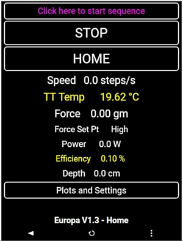
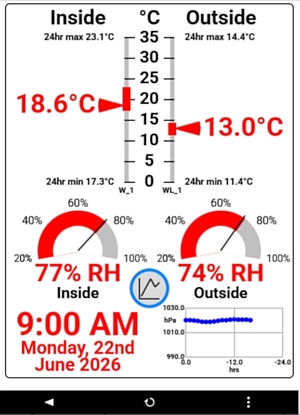
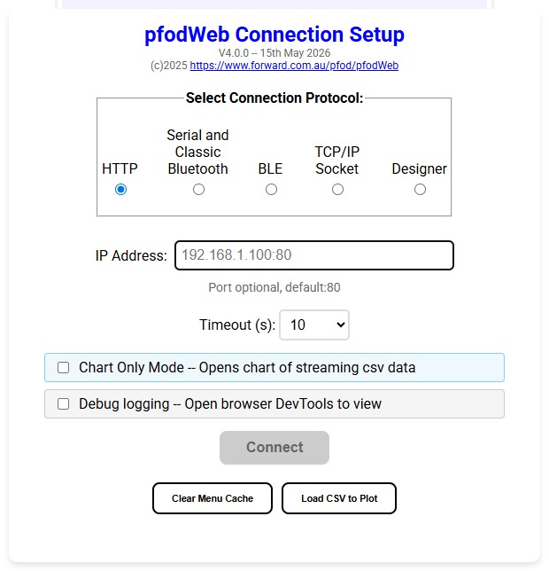
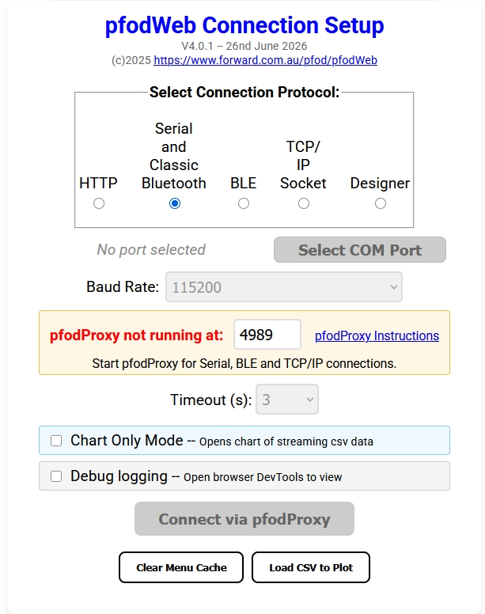
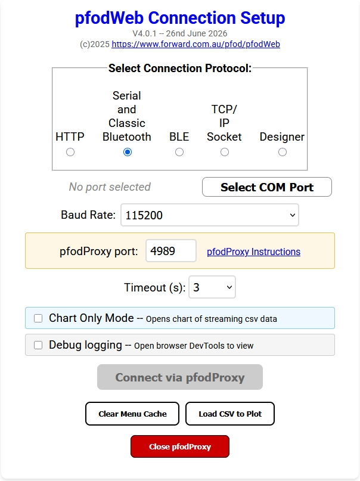
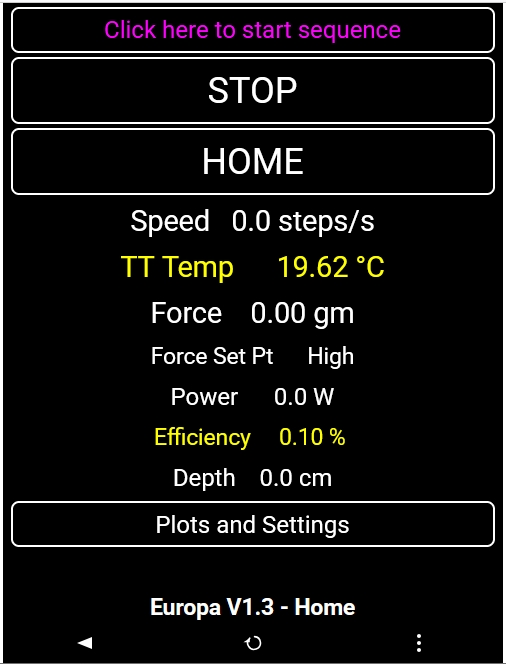
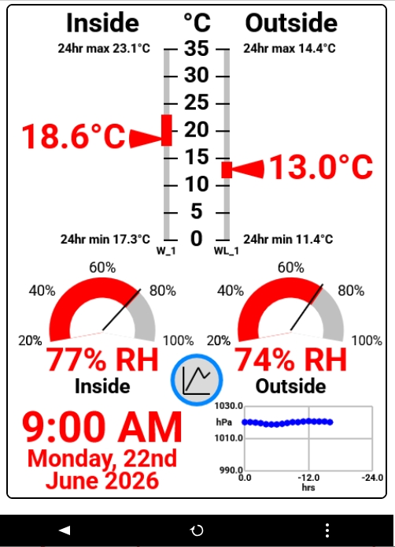
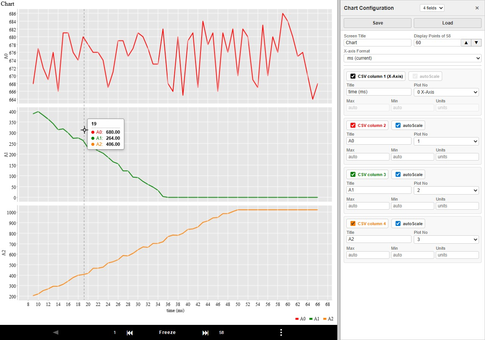
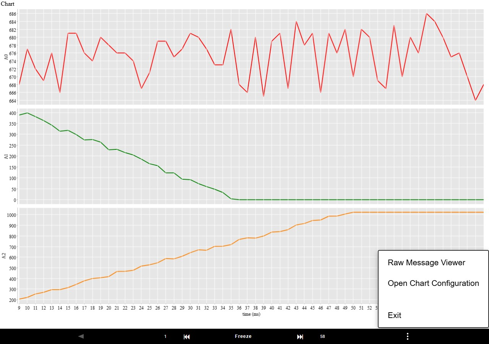

 |  |
pfodWeb is a browser-based interface for connecting to and interacting with pfod-compatible devices. It supports pfod drawings, pfod menus, live charting of CSV data, and offline plotting of saved CSV files.
For Serial, BLE and TCP/IP connections pfodWeb.html uses pfodProxy handle those connections is a consistant way in all browsers/operating systems. pfodProxy is a small, local, Rust based application that runs on your computer and acts as a bridge between your browser and your pfod device. The browser connects to pfodProxy over HTTP

For non-HTTP connections pfodProxy must be running before you can use pfodWeb. Start it for your operating system:

Click the pfodProxy Instructions link for how to download and start pfodProxy for your operating system (windows, macOS, linux)

pfodProxy listens on http://127.0.0.1:4989/ by default. To use a different port, pass the port number as an argument:
| OS | Custom port example |
|---|---|
| Windows | pfodProxy.exe 5000 |
| macOS (from Terminal) | pfodProxy.app/Contents/MacOS/pfodProxy 5000 |
| Linux | ./pfodProxy 5000 |
Once opened the pfodProxy stays open until closed manually or close with the pfodWeb Close pfodProxy button.
When pfodWeb.html is opened it shows the Connection Setup screen. Configure your connection here before connecting to a device.
Choose how pfodWeb communicates with your device:
| Protocol | Description | Supported Browsers |
|---|---|---|
| HTTP | Connects directly from your browser to a device over Wi-Fi using HTTP.
Enter the device IP address (e.g. 192.168.1.100) or hostname and port. pfodProxy is not used for this transport — the browser communicates with the device directly.
Then click the Connect button |
All browsers (Chrome, Firefox, Safari, Edge) since 2017 |
| Serial | Connects to a device via a USB serial port. pfodProxy handles the serial communication. Click Select COM Port to choose from the ports pfodProxy can see. Then select the baud rate and then click the Connect via pfodProxy button | All browsers |
| BLE | Connects to a Bluetooth Low Energy device. pfodProxy handles the BLE communication. Click Select BLE Device to scan for nearby devices and select one. then click the Connect via pfodProxy button. | All browsers |
| TCP | Connects to a device over a TCP socket (Wi-Fi). pfodProxy opens the TCP connection. Enter the device IP address and port (default 4989). Then click the Connect via pfodProxy button | All browsers |
| Designer | This connection does not use pfodProxy. It opens the built-in menu designer where you can create menus, sub-menus, charts, etc, connect board pins and then generated the complete Arduino Sketches | All browsers |
For Serial, BLE, and TCP connections, the pfodProxy port field shows the port pfodProxy is listening on (default 4989). Change this only if you started pfodProxy on a different port.
The Timeout dropdown sets how long pfodWeb waits for a response before treating the connection as failed. Default is 10 seconds for HTTP and 3 seconds for Serial/BLE/TCP. Increase the timeout if your device responds slowly.
Tick Chart Only Mode to skip the pfod main menu and go straight to the chart display after connecting. Use this when your device only sends CSV chart data.
After connecting, pfodWeb updates the page URL to include your current settings as query parameters (e.g. ?proxy=4989&serial=115200 or ?targetIP=192.168.1.100). If Chart Only mode was selected and a chart configuration has been applied, the URL also includes a &chart=… parameter.
Bookmark this URL to reopen pfodWeb with the same settings pre-filled. Opening the bookmark shows the Connection Setup screen with your settings already filled in — click Connect to connect immediately.
| Button | Description |
|---|---|
| Connect or Connect by pfodProxy | Connects to the device using the selected protocol and settings. |
| Clear Dwg Cache | Clears any cached pfod menu/drawing definitions stored in the browser. Use this if restarting/reprogramming the pfodDevice or if the menu or dwgs appear stale or corrupted. |
| Load CSV to Plot | Opens a file picker to load a previously saved pfod CSV data file and display it as a chart — no device connection needed. See Section 6. |
| Close pfodProxy | Shuts down the pfodProxy. Only shown when pfodProxy running. |
Browser -- pfodWeb works in any modern browser, Chrome/Chromium, FireFox, Safari and Edge from 2017 onwards.
No special browser permissions or flags are needed for Serial, BLE, or TCP connections.
The pfodProxy handles all device communication on behalf of the browser.
After connecting, pfodWeb shows the device's main menu.
This varies depending on what the device serves.
These examples are the main menu of the
Europa Ice Sampling Prototype
and a home
Weather Station


An optional side panel can be opened from the three-dot menu. When open, the display splits into two panes:
| Mode | What is shown |
|---|---|
| Menu mode | pfod menus rendered on rectangular mobile-phone style display. |
| Chart mode | Live or frozen chart(s) of CSV data received from the device. See Chart Mode Guide for full details. |
A black toolbar runs along the bottom of the canvas pane. The buttons shown depend on the current display mode.
| Button | Description |
|---|---|
| ◀ | Go back — resends the previous pfod command to return to the previous menu. Disabled in Chart Only mode. |
| ⋮ |
Opens a context menu. Options depend on the current display mode: Menu mode: Open Raw Message viewer, or switch to chart display. Chart mode: Open Raw Message viewer or Chart Configuration panel. |
| Button | Description |
|---|---|
| ↺ | Resends the last pfod command to refresh the current menu. |
| Button | Description |
|---|---|
| ⏮ | Step back — shifts the frozen display window back by 40% of the current Display Points. Only enabled when frozen. |
| Freeze / Freeze | Toggles freeze on/off. When frozen the button turns red and the display window is locked. Live data continues to be collected. Click again to unfreeze and return to the live view. |
| ⏭ | Step forward — shifts the frozen display window forward by 40% of the current Display Points. Only enabled when frozen. |
As well as plotting live streaming data from your device (any serial device), pfodWeb.html can also plot data from a CSV file saved by a previous session (or any other numeric CSV file) — no device connection is required.
pfod-csv-Nfields-<timestamp>.csv).
The side panel on the right opens when you choose Raw Messages or Chart from the three-dot menu in Menu mode. In Chart mode the choices are Raw Messages or Chart Configuration. Drag the divider to give it more or less space.
Shows the raw pfod messages exchanged with the device, useful exporting plot data and for diagnosing protocol issues. See Chart Mode Guide
Switches from Menu display to Chart display. When using the ... menu to switch to Chart display, the chart by default shows the csv plot data with the largest number of fields.
To display formatted charts, use a pfod Chart button (available in Designer) in a menu
When in Chart mode, Chart Configuration lets you customise the chart — set the title, display points, X-axis format, and per-field settings (label, plot number, Y-axis limits, units). Changes take effect when you press Enter, move to another field, or after 5 seconds. See the Chart Mode Guide for full details.

| Setting | Description |
|---|---|
| Protocol | HTTP, Serial, BLE, or TCP |
| IP Address / Port | HTTP and TCP — device IP address and port |
| Baud Rate | Serial only — select before clicking Connect |
| pfodProxy port | Serial, BLE, TCP — port pfodProxy is listening on (default 4989) |
| Timeout (s) | Response timeout in seconds (3, 5, 10, 20, or 30) |
| Chart Only Mode | Skip menus and go straight to chart display of streaming CSV data |
| Button | Mode | Action |
|---|---|---|
| ◀ | All | Go back — resend previous pfod command |
| ↺ | Menu | Resend last command |
| ⏮ | Chart (frozen) | Step back 40% of Display Points |
| Freeze | Chart | Lock / unlock display window |
| ⏭ | Chart (frozen) | Step forward 40% of Display Points |
| ⋮ | Menu | Open Raw Message viewer or switch to chart display |
| ⋮ | Chart | Open Raw Message viewer or Chart Configuration |